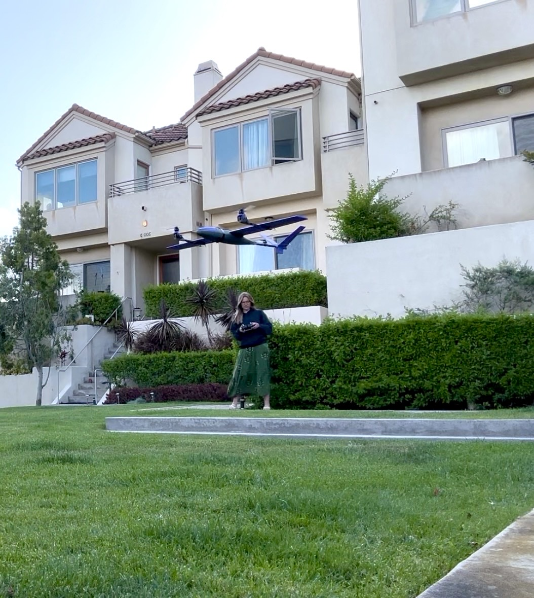
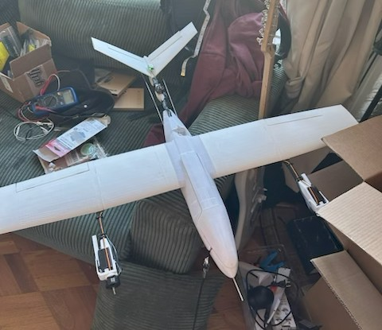
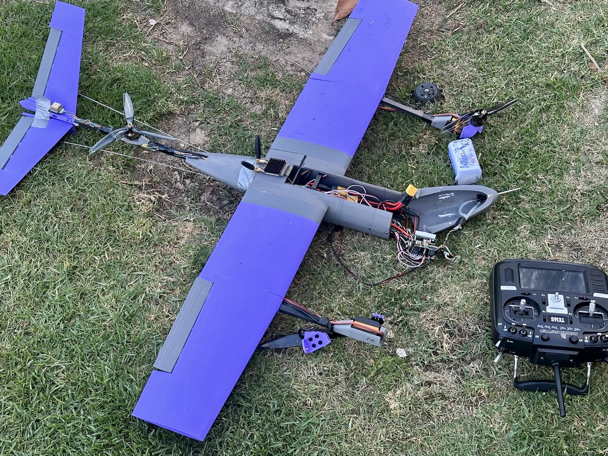
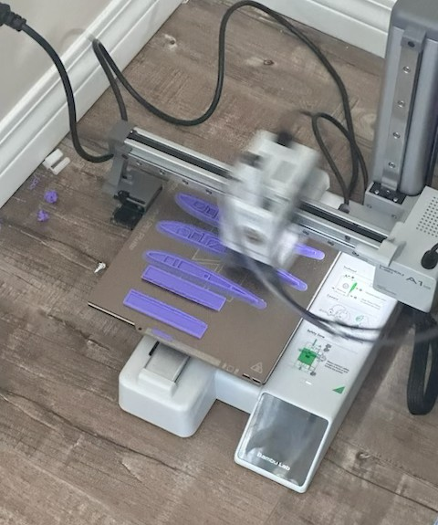

Dragonfly — VTOL Tilt-Rotor Plane


Figure 1 and 2: Dragonfly in progress (left) and airborne during one of its first two flights (right)
Dragonfly is a VTOL (Vertical Takeoff and Landing) tilt-rotor plane I designed and
built from scratch.
The project began summer 2025 as a personal challenge to push beyond the structured
environment of project teams and take full ownership of an aircraft from concept to
first flight. After this summer I continued the project on my own and rebuilt my own
version of it which is the purple version.
The tilt-rotor configuration was chosen for its versatility, and lightweight quality: the ability to take off and land vertically like a quadcopter while transitioning to efficient fixed-wing cruise flight. I designed the wings and tilt rotors and on my own am working out the software, flight controller configuration and other integration aspects.
I got the plane up in the air twice, then crashed it on the third flight. The project is currently on pause while I rebuild it.
The tilt-rotor configuration was chosen for its versatility, and lightweight quality: the ability to take off and land vertically like a quadcopter while transitioning to efficient fixed-wing cruise flight. I designed the wings and tilt rotors and on my own am working out the software, flight controller configuration and other integration aspects.
I got the plane up in the air twice, then crashed it on the third flight. The project is currently on pause while I rebuild it.
Design and Build Process
The design process involved iterating through airframe geometry, motor placement,
and control surface sizing to achieve stable flight in both VTOL and fixed-wing modes.
Key aspects of the project include:
- Custom airframe design optimized for tilt-rotor transition flight
- Motor and propeller selection for hover efficiency and forward thrust
- Flight controller configuration and tuning for dual-mode operation
- Lightweight structural construction to maximize thrust-to-weight ratio


Figure 3 and 4: Airframe construction and component details
First Flights and Crash
The first two flights went well and the plane flew as intended. On the third
flight, I crashed it into a fence when trying to transition to horizontal flight. This was due to pilot panic rather than the plane :\.
The airframe needs to be fully rebuilt but all the electronics are intact, so the project is on pause
for now while I rebuild it.

Figure 5 and 6: Dragonfly in flight (left) and after the crash on its third flight (right)
Additional Photos



Figure 7, 8, and 9: Additional build and detail photos
The project is on pause while I rebuild the airframe after the crash. Once it's
back together, the plan is to get back to flight testing and keep pushing on the
flight controller integration.
Original plane was built in collaboration with @charlesyan99030 on X.